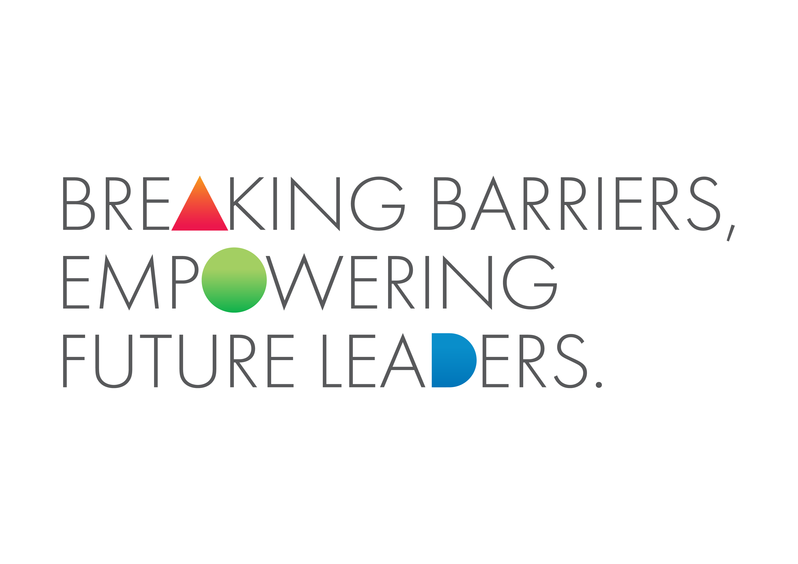

Every graphic device derives from the logo's DNA: simple geometric parts on a grid, composing a richer whole — the visual argument for interdisciplinarity. Under the refined system they are used small and deliberate, not as full-page wallpaper.
Gradient-filled square cells with one corner rounded into a quarter-circle — a magnified fragment of the monogram. Use as a partial border strip, a content-card system, or a hero fragment. Avoid covering whole pages.
Live CSS reconstruction. Cells may hold gradients, photography or text panels — the grid doubles as a layout system.
An airy field of half-square triangles in ice blue with rare warm accents, fading to white. The quiet texture for digital banners — content always sits in the calm centre.
Triangle, circle and half-circle stand in for A, O and D in the tagline — see Voice. The trio may extend to single hero words in campaigns (one replacement per word, never more), using the supplied shape gradients.

Thin-line icons in gradient strokes — DNA, microchip, cloud, finance, gears — each framed in a soft shape and wired together by connector lines with node dots. Disciplines, literally connected.
Style rules: consistent outline weight, one gradient family per icon, connectors in a neutral or single accent, generous internal padding.
| Subject | Treatment |
|---|---|
| People — students & mentors | True colour, natural light, named real people. Mentorship moments one-on-one; student portraits with first-person quotes. Never stocky, never anonymous. |
| Campus & architecture | May carry a single-family gradient wash when used as background; keep the wash light enough for texture to read. |
| Occasions | Senior-management gatherings, orientation dinners — candid group energy, captioned in small grey type over a thin rule. |
Principle: people-photography is content and stays clean; place-photography may become colour-field. Authenticity (real names, real mentors) is part of the elite promise.